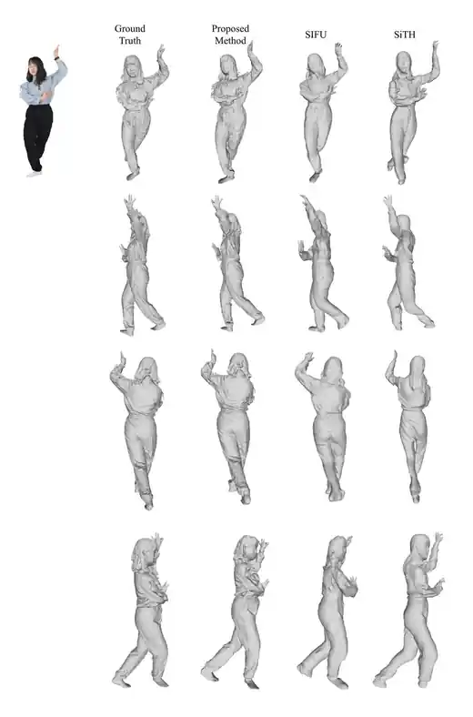
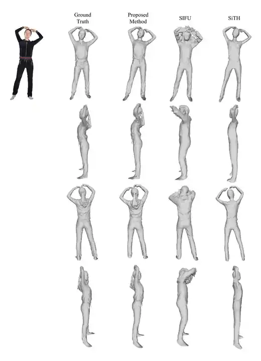

Triplane-Guided Sparse FlexiCubes
A high-resolution 3D reconstruction project combining triplane-guided feature sampling, sparse voxel processing, hierarchical geometry learning, and FlexiCubes-based mesh extraction.
Master's Student in Information Science at JAIST
My work focuses on high-resolution 3D clothed human reconstruction, sparse 3D representations, triplane-based feature learning, and differentiable mesh extraction.
My current research investigates how triplane features and sparse voxel hierarchies can be combined with FlexiCubes to reconstruct detailed clothed-human meshes without the cost of processing a fully dense high-resolution 3D grid.
Research on high-resolution clothed-human reconstruction using triplane features, sparse 3D structures, and differentiable mesh extraction.
Investigated generative-AI-based data augmentation with StyleGAN2 and Stable Diffusion for industrial defect detection under limited-data conditions.
Research focus: 3D clothed-human reconstruction, sparse 3D representations, triplane features, and differentiable meshing.
Undergraduate study in metallic materials and materials science and engineering.
A high-resolution 3D reconstruction project combining triplane-guided feature sampling, sparse voxel processing, hierarchical geometry learning, and FlexiCubes-based mesh extraction.
A generative-AI project for improving industrial defect-detection training under limited-data conditions using image synthesis and augmentation.
Examples comparing Ground Truth, the proposed method, SIFU, and SiTH from multiple viewpoints.


Python, C++, CUDA
PyTorch, Generative AI, Computer Vision
Triplane, FlexiCubes, SDF, Mesh Reconstruction, Sparse Voxels
Linux, Git, Slurm, OpenCV